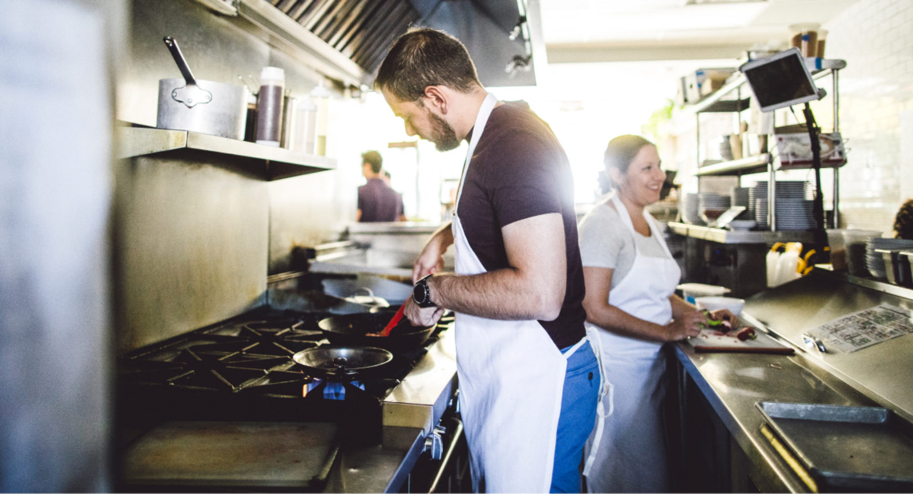
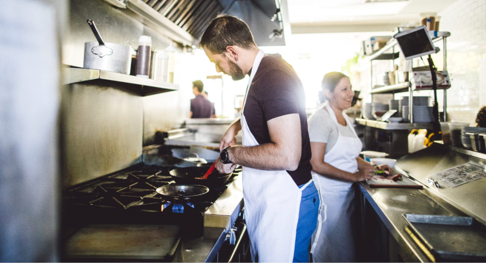

Nathan Chan
I am an undergraduate student in the department of economics at University of California Riverside. Currently I have a 3.7 GPA, and 3.63 major GPA. I have been awarded Dean's Honors List for four consecutive quarters. In my journey in upper division economics, I have widened my prospective, and am knowledgeable in the stock market, health economics, public economics and game theory. Furthermore, I am currently supplementing my Economics major with multiple computer science courses. As computers are becoming a more important form of technology in the modern world, I have felt that it is important to be able understand some fundamentals. I am fluent in block language and python, while currently learning HTML. I have previously worked on small computing projects, such as creating a calculator, and a food ordering app.
In my professional work, I have gained a wide range of experience at Metpure. I have worked in the warehouse for months, packaging and shipping products. When Metpure moved locations, I was then tasked with organizing the warehouse for optimal efficiency. At the new warehouse, I was in charge of where the new racks would be placed, and how the inventory would be organized to allow for a smooth transition when it came to shipping and receiving. Months after working in the warehouse, I was moved to do office work because of my extensive knowledge of the good being sold. I was then tasked to create new listings on Amazon, eBay, and eventually the Metpure website. While creating listings, I also created a Microsoft Excel calculator that was used to maximize profits, by minimizing costs. By using this calculator, it allowed us to save cost on shipping by optimizing the dimensions of our packaging, and determining if it was even worth selling certain products. During this time, I learned to outsource some of my tasks to other companies that could do parts of my job faster and cheaper, so I can focus more on tasks that were more urgent and more complex. At this time I still worked closely with the other warehouse workers to further smooth out the process from orders to packaging to shipping. Therefore, even after I left both the office and the warehouse were still able to put out orders at a fast pace.
In volunteer work, I have worked with the Linyin Association to provide moral teachings to young children ages 5 through 12. At the association we believe that not only should a person focus on their academic studies, it is also important to focus on propriety. We teach the children Di Zi Gui - A Guide to a Happy Life. This book teaches people how they should behave as children, siblings, friends, and workers. A group of us lead the children to learn these ancient teachings, using simple terms so they can understand, while preparing fun activities to keep them engaged. At Linyin Association we also provide community service by cooking fresh meals for the needy weekly. Fresh and healthy meals are packed and distributed to hungry people.
Experience
Office Assistant
• Developed websites for Metpure
• Created listings for e-commerce
• Warehouse experience
Programmer
• Created programs using advance block language
• Solved a NP-hard problem in linear time
Education
UC Riverside
Portfolio



